Chapter 7 told you how to finetune; this chapter is about the thing finetuning eats: data. Huyen first asks what data you need and what "good data" means, boiled down to three dials: quality, coverage (diversity) and quantity. Then she covers where data comes from: your own app, public datasets and paid human annotation, all guided by careful annotation guidelines. Because human data is slow and expensive, a big middle part is about making data with code and with AI: rule-based templates, simulations, paraphrasing, back-translation, reverse instructions, Llama 3's self-checking code pipeline, how to verify synthetic data, why it cannot fully replace human data (imitation, model collapse, lost lineage), and model distillation. The chapter ends with the hands-on pipeline: inspect, deduplicate, clean and filter, and format the data so it matches the model's chat template.
Read the rows top to bottom. Each orange box is the idea the next row reacts to. The book warns that in real life you loop back and forth between these steps; it is not a straight line.
The opening claim is simple: a model can only be as good as the data it was trained on. Even the best team with unlimited GPUs cannot finetune a good model if it has no good data. So the job of dataset engineering is to build the dataset that lets you train the best model you can, ideally without blowing your budget.
Three trends make this more important every year:
In OpenAI's GPT-3 paper (2020) only two people were credited with collecting, filtering and deduplicating data and checking overlap with test data. Three years later the GPT-4 report (2023) credited eighty people for different data processes, and that count does not even include the annotators OpenAI hired through outside data vendors. Even something that sounds as small as the ChatML format (the chat message format) involved eleven people, many of them senior researchers. For contrast, in a 2016 "ask me anything" thread, OpenAI cofounder Wojciech Zaremba said they planned to do most of their research on publicly available datasets.
If the menu of models is confusing, the data landscape is worse: new datasets and new techniques appear constantly. The chapter is a map of that landscape plus the things to think about when building your own dataset. Its route:
These steps are not linear. You will bounce between them many times.
Different training phases teach the model different skills, so each needs data with different properties. One concrete difference: for pre-training, data size is usually counted in tokens; for supervised finetuning (SFT), it is counted in examples. But the curation principles are the same. The chapter focuses on post-training data (finetuning data) because that is what application developers touch, and borrows lessons from pre-training data where they help.
Tools and best practices can automate parts of it, but the author's honest summary is that data work is mostly "toil, tears, and sweat."
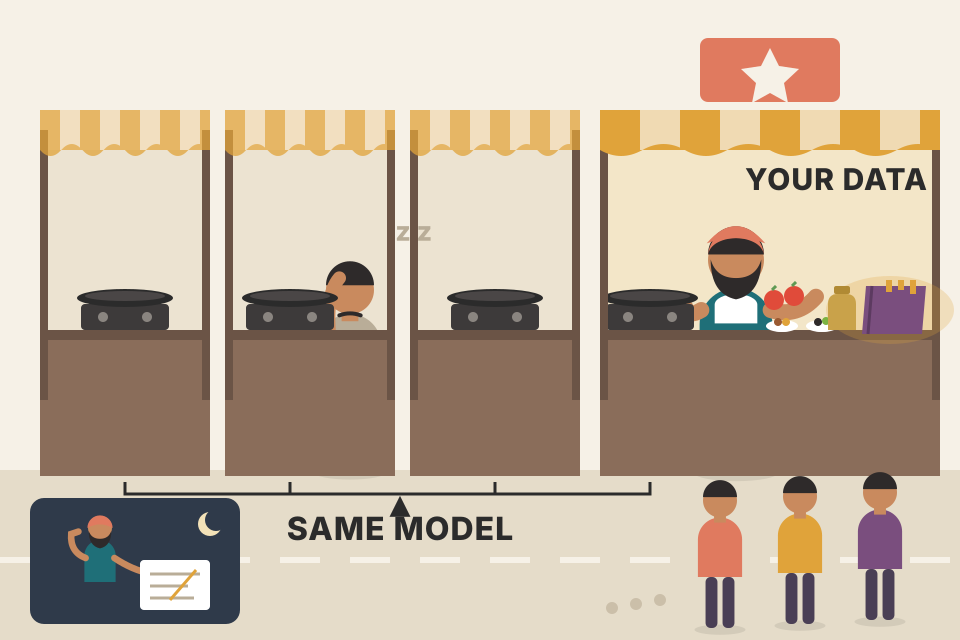
Every restaurant on the street buys the same gas stove and the same brand of tawa (the foundation model). What makes one dhaba famous is the ingredients and the recipe the owner perfected over years (the data). Where it breaks: a dhaba can taste its food every night; with data you often only find out it was bad after an expensive training run.
A finetuned model learns to imitate the patterns in its training examples. It has no other source of "what you want". So every flaw in the data, wrong labels, odd formatting, missing cases, becomes a flaw in the behaviour. That is why the people effort shifted from model code to data.
"Why does data matter more now than model architecture?" Say: "Most teams start from the same open or API foundation models, so architecture is no longer the edge. The edge is proprietary, task-specific data: its quality, its coverage of real user behaviour, and enough of it. GPT-4's report credited about 80 people for data work versus 2 for GPT-3, which shows where the effort moved."
The growing focus on data has a name: data-centric AI, the opposite of model-centric AI.
In the early deep learning years, benchmarks were model-centric: everyone got the same dataset (like ImageNet) and competed to train the best model on it. Recently more benchmarks are data-centric: everyone gets the same model and competes to build the dataset that makes it best.
| Year | Data-centric benchmark | What competitors did |
|---|---|---|
| 2021 | Andrew Ng's data-centric AI competition | Improve one shared base dataset: fix wrong labels, add edge cases, augment data. |
| 2023 | DataComp (Gadre et al.) | Build the best dataset to train a CLIP model (Radford et al., 2021). A fixed script trains CLIP on each submitted dataset; the dataset is scored by the trained model's results on 38 downstream tasks. |
| 2024 | DataComp for language models (Li et al.) | Same idea for language models from 412M to 7B parameters. |
| — | DataPerf (MLCommons, 2023), dcbench (Eyuboglu and Karlaš, 2022) | Other data-centric benchmarks. |
The split is useful for organising research, but real progress usually needs both: better models and better data.
Click each change; the page tells you whether it is a model-centric or data-centric move.
A cricket academy can improve results two ways: hire a better coach and new bowling machines (model-centric), or give the same coach better net sessions, real match footage, and practice against spin they will actually face (data-centric). Where it breaks: a coach can adapt on the fly; a model's "coaching" is frozen once training ends.
When architectures converge (almost everyone uses transformers) the marginal gain from model tweaks shrinks. Data still has lots of slack: mislabeled, duplicate or irrelevant examples waste capacity, and missing cases leave blind spots. Fixing those is often cheaper than scaling the model.
"Your model's accuracy is stuck. What do you try?" A strong answer covers both sides: "First I'd look at the data, error analysis on failures, label noise, missing edge cases, duplicates, because that is usually the cheapest win. Then model-side changes: a bigger base model, different finetuning method, hyperparameters."
Data is not the fix for every model problem, but it is usually a big part of the fix. The right data can make a model more capable, safer and better at long contexts. Bad data can make it more biased and hallucinate more. Mistakes in data both hurt the model and waste money.
Data curation is a science: it needs an understanding of how the model learns and what resources exist to help it learn. Dataset builders should work closely with application and model developers. In small teams the person who trains the model also finds its data; organisations with big data needs hire specialised roles. (Footnote 2: with a lot of data, just making sure it is compliant can be a full-time job.)
| Training method | Data format |
|---|---|
| Self-supervised finetuning | Plain sequences of data (text) |
| Instruction finetuning (SFT) | (instruction, response) |
| Preference finetuning | (instruction, winning response, losing response) |
| Reward model training | The same as preference data, or ((instruction, response), score) |
Examples written for this page (a support-bot task), not taken from the book.
The training data must show the behaviour you want the model to learn. High-quality annotations are always hard to get, and harder still for complex behaviours like chain-of-thought (CoT) reasoning and tool use.
CoT prompting (Chapter 5) nudges a model to work step by step before answering. To teach a model to produce step-by-step answers on its own, its training data needs CoT responses. The paper "Scaling Instruction-Finetuned Language Models" shows that adding step-by-step responses to finetuning data greatly improves models of many sizes on CoT tasks, nearly doubling accuracy on some tasks. (The book cites this paper as "Chun et al., 2024" here and "Chung et al., 2022" on pdf p400; it is the same Chung et al. FLAN paper.)
The catch: writing multi-step responses is slow. Explaining how to solve a math problem is much harder than writing the final answer. The book shows two examples from that paper; here are the same two shapes in my own words:
Because CoT answers cost more human effort, CoT datasets are rarer than other instruction datasets.
Models absorb a lot during pre-training, so many already "sort of" know how to use some tools. Showing them tool-use examples still improves this skill. A common approach is to have domain experts write the data: each prompt is a task that needs tools, each response is the sequence of actions that does the task. Example: to finetune a personal-assistant model, ask professional personal assistants what tasks they do, how they do them, and which tools they need.
Two problems:
Tool-use data can also need special formats. In ordinary chat data, user and AI take turns, one message per turn. With tools, the AI may send several messages in one turn, each to a different place: one to a code interpreter and one to the user saying what it is doing. For this, the Llama 3 authors (Dubey et al., 2024) designed a multi-message chat format with message headers naming each message's source and destination, plus special termination tokens marking where human and AI turns start.
Illustrative header names (modelled on the idea; not Llama 3's exact special tokens).
Training a new kirana shop assistant: if you only tell him "give the customer what they ask for", he learns nothing about checking stock in the back room, ringing the UPI QR, and telling the customer "one minute". You need to show the whole sequence, including the side messages. Where it breaks: the new assistant can ask questions; a model learns only from the examples you wrote down.
Finetuning is imitation. If the target text has no reasoning steps, the model learns to jump to answers. If tool calls are written in a human's click-by-click style, the agent learns an inefficient plan. The data's shape (steps, tool calls, message routing) is part of the behaviour being taught.
"How would you build training data for a tool-calling agent?" "I'd log real tasks, but not copy human click paths. I'd simulate candidate tool sequences against the real or mocked APIs, keep the ones that succeed with the fewest calls, and store them in a multi-message format where each message has a source and destination, like the user, a tool, or the code runner." This maps directly onto tool-calling agents in a voice product, where one turn may call a CRM tool and speak a filler line to the user.
For apps with a conversation interface, decide whether you need single-turn data, multi-turn data, or both.
Curation is not only adding data to teach new behaviour; it is also removing data to make the model unlearn bad behaviour. The book's story: you run a ChatGPT-like bot, and users complain it is a bit arrogant and wastes their tokens. Asked to check whether a statement is factually correct, it says the statement is correct but "its style can be improved", then rewrites the statement nobody asked it to rewrite.
Each application needs data with different characteristics, and different training phases need different data mixes. But at a high level, curation follows three criteria: data quality, data coverage and data quantity. The book's cooking analogy:
| Criterion | Cooking version |
|---|---|
| Quality | Quality of the ingredients: spoiled ingredients, bad food. |
| Coverage | The right mix of ingredients: not too much or too little sugar. |
| Quantity | How much of the ingredients you have. |
Multi-turn data is like the IRCTC booking flow at a railway counter: "Which date?" "Tatkal or general?" "Sorry, 3AC is full, 2AC ok?" A single-turn example only teaches the clerk to answer "Is there a train to Pune?". Where it breaks: the real clerk has a live seat chart; the model only has whatever context you pass in.
The model cannot tell "good habit" from "bad habit" in its data. A few dozen annotator examples with unrequested rewrites are a signal to imitate. Removing them takes the signal away; adding counter-examples (fact-check with no rewrite) gives the model a clear new pattern.
Say 4% of 20,000 SFT examples (800) contain an unrequested rewrite (modelled). You drop the 800 and commission 500 new fact-check examples with a plain verdict. The data now shows "verdict only" 500 times and "verdict plus rewrite" zero times, so the habit has nothing to be learned from.
"Users say your bot is verbose and preachy. Fix it without a new model." "Trace it to data: search the finetuning set for the pattern, remove those examples, add counter-examples that show the wanted behaviour, retrain, and add an eval for it so it doesn't come back." For a voice agent, verbosity is a latency and cost bug too, so it is worth a regression test.
A small amount of high-quality data can beat a large amount of noisy data (irrelevant or inconsistent). Three pieces of evidence:
So what is "high-quality"? The short answer: data that helps you do your job efficiently and reliably. Long answers differ by person. (Footnote 3: IBM lists seven data-quality dimensions, completeness, uniqueness, validity, timeliness, accuracy, consistency and fitness for purpose; Wikipedia adds accessibility, comparability, credibility, flexibility and plausibility. Those are for data in general; this chapter cares about finetuning data.) For finetuning, data is high-quality if it has six properties (some use cases add more):
Footnote 4: the author's painful bug, a float column stored as integers silently rounded values and caused baffling behaviour. Footnote 5: "unique" here means no duplicates; separately, having data nobody else has is extremely valuable.
Before creating data, work out what each of the six properties means for your task. The techniques in the rest of the chapter aim to produce data with these properties.
Task (made up for this page): a support bot for a UPI payments app that must answer concisely, with no customer PII. Click "Audit" to flag each row.
Six checks a good chai stall owner does on milk: is it milk at all (relevant), full-cream if the recipe needs it (aligned), the same every day (consistent), not in a leaking packet (formatted), not counted twice in the bill (unique), and bought from a licensed dairy (compliant). Where it breaks: bad milk smells; bad data usually looks fine until you inspect it.
Each noisy example pulls the model's weights a little in a wrong direction. With few examples, every example carries a lot of weight, so a small clean set can teach a clear pattern while a big noisy set teaches a blurry average. Consistency matters because contradictory labels for the same input teach the model "it's random", which shows up as unstable outputs.
"What makes finetuning data high quality?" List the six: relevant, aligned with the task's requirements, consistent, correctly formatted, sufficiently unique, compliant. Then add evidence: "LIMA got GPT-4-level preference in 43% of cases from 1,000 curated examples, so I'd rather have 2,000 clean, consistent examples than 50,000 scraped ones."
The training data should cover the range of problems you expect the model to solve. Real users bring many kinds of problems and phrase them in very different ways. Coverage needs enough diversity, so many people just call this data diversity.
Each app has its own diversity dimensions. A French-to-English translator does not need language diversity but benefits from diverse topics, lengths and speaking styles. A product-recommending chatbot for global customers may not need domain diversity, but linguistic and cultural diversity matter a lot. For general chatbots, the data should be diverse in topics and speaking patterns.
The Llama 3 paper details coverage across all three phases: pre-training, SFT and preference finetuning. The one diversity axis present in all three is domain diversity, though the right mix differs. The table shows only high-level domains (not finer topics like "geometry" inside math). Post-training also has axes not in the table: number of tokens in context and response, number of turns, and, since Llama 3 used synthetic data, the ratio of human to AI-generated data.
| Domain (Table 8-1) | Pre-training | Supervised finetuning | Preference finetuning |
|---|---|---|---|
| General knowledge (English) | 50% | 52.66% | 81.99% |
| Math and reasoning | 25% | 21.19% | 5.89% |
| Coding | 17% | 14.89% | 6.93% |
| Multilingual | 8% | 3.01% | 5.19% |
| Exam-like | — | 8.14% | — |
| Long context | — | 0.11% | — |
Two observations from the author:
Zhou et al. (2023) trained a 7B model on three datasets of the same size, 2,000 examples: one high-quality but not diverse, one diverse but low-quality, one both.
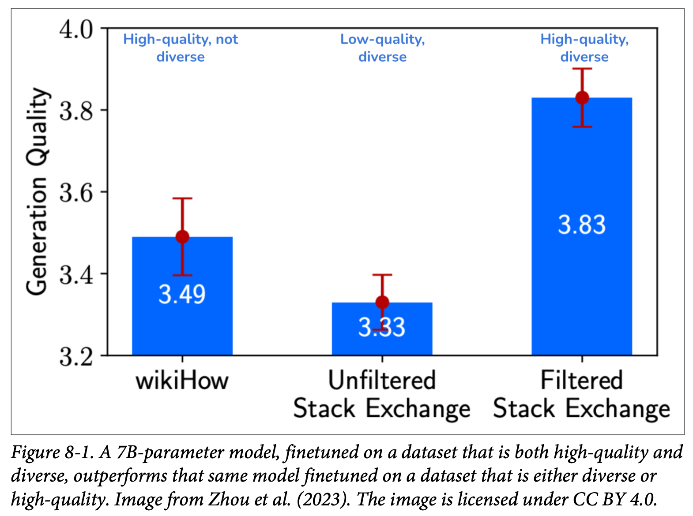
How to read this figure. Each bar is one finetuned model; height is its generation quality score (y-axis from 3.2 to 4.0, so the differences are zoomed in). The red whiskers are error bars. wikiHow (clean but all one style of "how-to" article) scores 3.49. Unfiltered Stack Exchange (many topics, messy quality) scores the lowest, 3.33. Filtered Stack Exchange (many topics, cleaned) scores 3.83, clearly above both. Lesson: at equal size, you need quality and diversity; neither alone is enough.
A thali: perfect dal alone (quality, no variety) leaves you wanting; ten sloppy dishes (variety, poor quality) disappoint; ten well-made dishes win. And the right proportions depend on who's eating: a Gujarati thali and a Bengali thali differ, just as Llama 3's SFT and preference mixes differ. Where it breaks: you can taste a thali; a data mix has to be tested by training models on it.
A finetuned model generalises well only near the examples it saw. Missing a kind of query (short, typo-filled, Hindi-English mix) leaves a region where the model falls back to base behaviour. But adding unrelated, noisy variety can drown the signal, which is the "Data Addition Dilemma". Small-model scaling experiments are a cheap way to search the mix before paying for the big run.
A realtime voice support agent (modelled): logs show 60% short spoken queries with fillers ("umm, my payment, it's stuck"), 25% long complaints, 10% Hinglish, 5% abusive callers. A dataset of only clean, typed, English questions has no coverage for 40%+ of traffic. A coverage plan: sample SFT data to roughly mirror those shares, then oversample the 5% abusive and 10% Hinglish slices a bit because they are where the base model is weakest.
"How do you decide what goes into a finetuning dataset?" "Start from the real traffic distribution: task types, topics, lengths, languages, turn counts. Mirror it, then deliberately cover rare-but-important slices. Validate with small-scale runs, like Meta's approach of training small models on candidate mixes to predict the big model. Llama 3 changed little architecturally; the gains came from data quality and diversity."
Asking "how much data do I need?" is like asking "how much money do I need?": the answer swings wildly. At one extreme, Jeremy Howard and Jonathan Whitaker ran a fun experiment showing LLMs can learn from a single example. At the other, some teams finetune with millions of examples.
Millions sounds like a lot, but it is tiny next to pre-training. Llama 2 was trained on 2 trillion tokens and Llama 3 on 16 trillion. At 2,000 tokens per example that is about 1 billion and 8 billion examples. (The book prints "15 billion" for Llama 3; 16T ÷ 2,000 is 8 billion, so that figure looks like a slip.)
If you have millions of examples, you can and should evaluate training from scratch. Finetuning a pre-trained model is usually more efficient, but it can be worse when you have a lot of data, because of ossification: pre-training can "freeze" (ossify) the weights so they adapt less well to the finetuning data (Hernandez et al., 2021). Smaller models ossify more than larger ones.
Besides quality and diversity, three factors decide how much data you need:
OpenAI's finetuning guide illustrates the last point. With only 100 examples, more advanced models finetune much better, probably because they are already better out of the box. With 550,000 examples, all five models end up about the same.
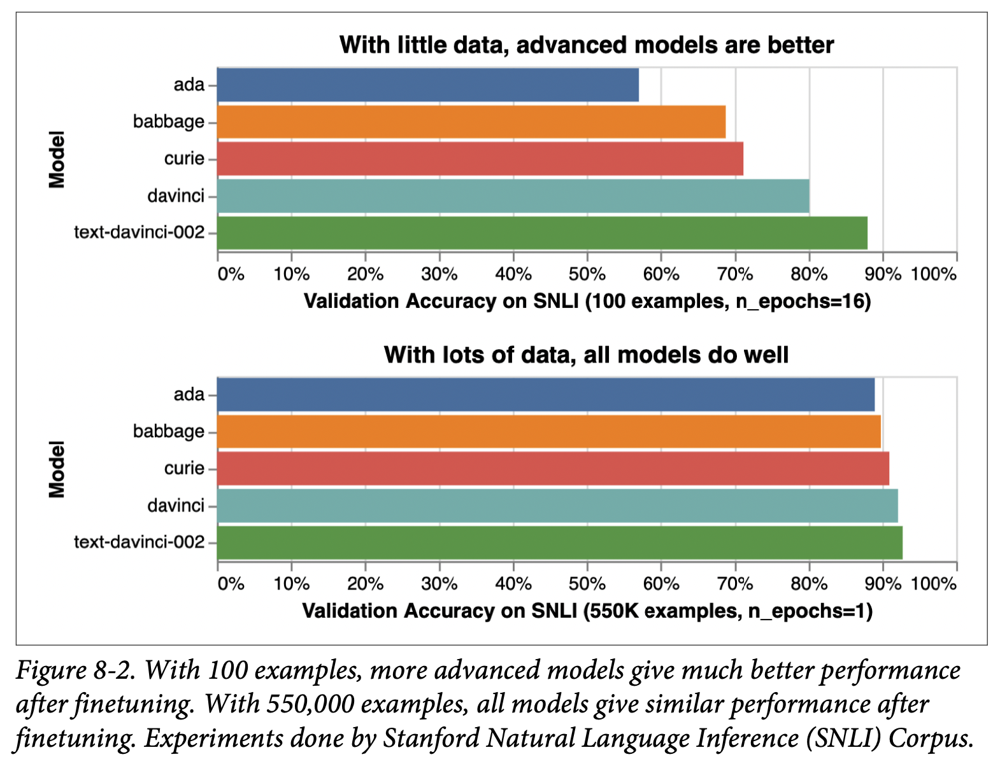
How to read this figure. Five OpenAI models, from smallest/oldest (ada) to most capable (text-davinci-002). x-axis: validation accuracy on SNLI (a task of deciding if one sentence implies, contradicts or is neutral to another). Top panel (100 examples, trained 16 epochs): bars climb steadily, ada near 57% and text-davinci-002 near 88%, so the base model matters a lot. Bottom panel (550K examples, 1 epoch): every bar is around 88–92%; with enough data the gap nearly disappears. (Accuracies read off the chart, approximate.)
The rule of thumb: little data → PEFT on a more advanced model; lots of data → full finetuning, possibly of a smaller model.
Before curating a big dataset, try a small, well-crafted one (for example 50 examples) to see if finetuning helps at all:
But do not conclude too fast that "finetuning doesn't help". Results also depend on hyperparameters (a learning rate too high or too low), data quality, badly written prompts and more. In the vast majority of cases you should see improvement after finetuning on 50–100 examples.
You can reduce how much high-quality data you need by first finetuning on lower-quality or less relevant data:
Footnote 6: Huyen's earlier book Designing Machine Learning Systems covers more ways to need fewer labels: weak supervision, semi-supervision and active learning.
Finetune on subsets of what you have, say 25%, 50%, 100%, and plot performance against dataset size. A steep slope means doubling the data should help a lot; a plateau means doubling gives little.
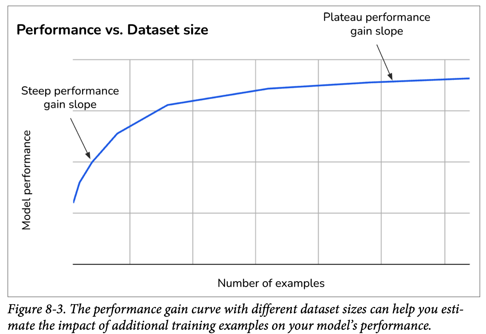
How to read this figure. x-axis: number of examples; y-axis: model performance (no numbers, it is a shape). The left part, labelled steep performance gain slope, is where each extra batch of data buys a lot. The right part, the plateau, is where the curve flattens and more data buys little. You want to know which part you are on before you pay for more annotation.
This shape is typical: diminishing returns. For example, the first 1,000 examples might add ten percentage points of accuracy and the next 1,000 only five.
Modelled curve (accuracy = 50% + 40% × (1 − e−n/scale)), not book data. The dots at 25/50/100% are the subset runs the book recommends.
More examples generally help, but diversity of examples matters as well. "Scaling Instruction-Finetuned Language Models" (Chung et al., 2022) found performance rose a lot when the number of finetuning tasks went from 9 to 282. Beyond 282, gains started to plateau, though small positive improvements continued up to 1,836 tasks.
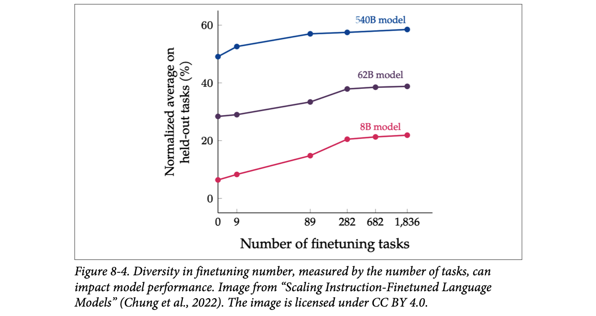
How to read this figure. x-axis: number of finetuning tasks (0, 9, 89, 282, 682, 1,836; not evenly spaced). y-axis: normalized average score on held-out tasks (tasks not seen in training). Three lines: 540B model (top, about 49 → 58), 62B (about 28 → 39), 8B (about 6 → 22). Every line climbs most between 0 and 282 tasks and is nearly flat after 282. The small 8B model gains the most in relative terms. Values are read off the chart and approximate.
Diversity can show up as task types (summarisation, question answering), topics (fashion, finance, technology) and expected output formats (JSON, yes/no).
How much data you use also depends on budget. If you have $10,000 for annotation and each example costs $2, you can have at most 5,000 examples. You also have to split money between data and compute: more on data means less on compute, and vice versa.
The default ($10,000, $2, 100% on data) reproduces the book's 5,000-example case. The PEFT/full-finetuning hint uses the book's ranges.
Learning to drive in Bengaluru traffic: the first 10 hours with an instructor teach you a lot, the next 10 a bit less, and after 100 hours you're refining. A driver who already rides a scooter (strong base model) needs fewer lessons than someone who has never been on the road. Where it breaks: a driver's skill transfers across cities naturally; a model only transfers to tasks similar to its data.
A strong base model already "knows" most of what the task needs, so finetuning only has to point it in the right direction; a few examples do that. A weak model must actually learn the skill, which needs many examples. With enough data, the data itself carries the skill, so base-model differences shrink (Fig 8-2). Diminishing returns happen because early examples teach the common patterns and later ones mostly repeat them, adding only rare cases.
You finetune on 1,000 / 2,000 / 4,000 examples and get 71%, 78%, 81% (modelled). Gains: +7 points for the second 1,000, +3 points for the next 2,000. The curve is bending into the plateau. Doubling to 8,000 at $2 each ($8,000) may add only 1–2 points; that money might be better spent on harder, more diverse examples or a stronger base model.
"How many examples do you need to finetune?" "It depends on the technique, task complexity and base model. I'd start with 50–100 well-crafted examples on a strong model with LoRA; if there's a clear gain, finetune on 25/50/100% subsets and plot the curve to decide whether more data is worth it. With tens of thousands of examples, full finetuning becomes an option, even on a smaller model."
The goal of data acquisition is a dataset that is big enough, with the quality and diversity you need, collected in ways that respect user privacy and follow regulations. Ways to acquire data:
There is even a small but growing research field on data acquisition strategy: how best to get a dataset that meets given requirements within a budget.
The most important source, though, is usually your own application. If you can build a data flywheel, where data generated by users keeps improving the product, which attracts more users and more data, you gain a big advantage. (Footnote 7: the author has heard "data flywheel" in so many startup pitches that she jokes it must be illegal to start an AI startup without saying it.)
Application data is ideal because it is perfectly relevant and aligned with your task: it matches the distribution of data you care about, which other sources rarely do. User-generated data can be:
Before creating your own data, check existing datasets. Data marketplaces are huge and offer both open-source and proprietary data; with luck one is exactly what you need. Usually it is mix-and-match: one dataset assembled from several sources and acquisition channels. The book's sample workflow for an (instruction, response) dataset:
The author stresses that this is simplified; most real steps are hidden. Typical surprises: many annotations turn out unhelpful, so you update the guidelines and re-annotate; some are factually wrong, so you hire another set of annotators to fact-check; or 100 synthetic instructions per template hurts diversity, so you write more templates and generate fewer per template. And so on.
A small inconsistency in the book's step 5: it says "100 instruction templates" and then "these 10 templates". Either way the arithmetic of the example is 2,000 synthetic instructions added.
A data flywheel is like a popular Swiggy restaurant: more orders produce more ratings and reorders, which tell the kitchen which dishes to fix, which gets more orders. A competitor cannot buy those ratings. Where it breaks: ratings from your users only tell you about the users you already have, so coverage of new markets still needs other data.
Train-serve mismatch is a main reason models disappoint in production. Your own logs are, by definition, drawn from the production distribution: same users, same phrasing, same edge cases. Public data never matches that perfectly, so it is a starting point that you then filter, fix and top up.
"How would you build a data flywheel for an LLM product?" "Log prompts, responses, tool calls and outcomes with user consent and PII handling; capture explicit feedback (thumbs, edits) and implicit signals (retries, call escalations); sample from that into eval sets and finetuning sets; retrain or update prompts; measure on the evals; ship." For a voice agent, call outcomes and human-handoff rates are strong implicit signals.
Use available data, but never fully trust it: inspect and validate it thoroughly. Always check the license, and try to understand where the data came from: even a dataset licensed for commercial use may contain parts from a source that does not allow it.
| # | Resource | What it offers |
|---|---|---|
| 1 | Hugging Face, Kaggle | Hundreds of thousands of datasets each. |
| 2 | Google Dataset Search | "Wonderful and underrated" search engine for datasets. |
| 3 | Government open data: Data.gov, data.gov.in | Hundreds of thousands (US) and tens of thousands (India) of datasets. |
| 4 | University of Michigan's ICPSR (Institute for Social Research) | Data from tens of thousands of social studies. |
| 5 | UC Irvine ML Repository, OpenML | Older repositories, several thousand datasets each. |
| 6 | Open Data Network | Search across tens of thousands of datasets. |
| 7 | Cloud providers, notably AWS Open Data | Small collections of open datasets. |
| 8 | ML frameworks, e.g., TensorFlow Datasets | Small pre-built datasets you can load from the framework. |
| 9 | Evaluation harnesses, e.g., EleutherAI's lm-evaluation-harness | 400+ benchmark datasets, averaging 2,000+ examples each, enough for PEFT finetuning. |
| 10 | Stanford Large Network Dataset Collection | Graph datasets. |
Often you must annotate your own data. The labelling is hard, but writing clear annotation guidelines is harder. You must spell out what a good response looks like and why. Can a response be correct but unhelpful? What separates a 3 from a 4? Guidelines are needed for both human and AI annotation.
Some teams, LinkedIn among them, said annotation guidelines were among the hardest parts of their AI engineering pipeline. Worryingly often, people abandon careful annotation halfway because of the time and effort, hoping the model will figure out the right answers itself. Strong models sometimes do, but relying on that is too risky for many applications.
The good news: these guidelines are the same as for evaluation data (Chapter 4). That is one more reason to invest in evaluation guidelines and data. With luck, your evaluation examples can be augmented or used as seed examples to synthesise new data, which is the next section.
Two annotators score the same 8 responses on a 1–5 scale. Toggle the guideline quality and see how often they agree (modelled numbers).
Board exam paper checkers get a marking scheme: "2 marks for the formula, 1 for units". Without it, one teacher gives 4/5 and another 2/5 for the same answer. Annotation guidelines are that marking scheme. Where it breaks: exam answers have a right answer; many LLM outputs are judgement calls, which is exactly why the guideline must define what "good" means.
The guideline is the actual definition of your task. The labels are just that definition applied many times. If the definition is fuzzy, labels disagree, and the model learns the noise (see "Consistent" in Plate 5). Because evals use the same definition, one good guideline pays twice: for training data and for judging the model.
"What's hardest about getting labelled data?" "Not the labelling, the guideline. You have to define what a good response is, where the score boundaries are, and edge cases like correct-but-unhelpful. I'd write it with the eval set in mind, pilot it with two annotators, measure agreement, and refine until they agree. And always check dataset licenses and provenance before using public data."
Along with compute and talent, data is the hardest challenge in AI, and the industry has long wanted to generate data programmatically. Two common processes:
Augmented data is derived from real data; synthetic data is not real. Since both aim to automate data creation, people use the terms interchangeably; the chapter often says "data synthesis" for both.
Fake data has a long history in software: test data. Libraries like Faker and Chance generate names, addresses, phone numbers and emails. Built a shipping-address parser? Generate addresses in many countries and formats to make sure it parses them all.
# illustrative test-data idea (my own, using Faker's public API)
from faker import Faker
for locale in ["en_IN", "en_US", "de_DE", "ja_JP"]:
fake = Faker(locale)
for _ in range(3):
addr = fake.address() # a realistic-looking address for that country
assert parse_address(addr) # your parser must handle every formatEach locale gives a different address format; the loop is a cheap way to cover formats you would never type by hand.
Now that AI can produce data indistinguishable from human writing, much richer data can be synthesised: doctor's notes, contracts, financial statements, product descriptions, images, video ads. That opens up many more uses.
Synthetic data greatly reduces the need for human data but doesn't fully replace it. In many cases, mixing human and AI-generated data gives the best value (see the limitations in Plate 17).
Augmentation is photocopying your real Aadhaar card at different angles for a document-scanner test. Synthesis is designing fake ID cards in the same layout with made-up names. Where it breaks: a fake card looks right to a scanner, but synthetic text can be subtly wrong in ways a model will happily learn.
Both methods try to cheaply expand the data the model sees. Augmentation keeps the true label (a flipped cat is still a cat) and adds variation. Synthesis creates both input and label, so its value depends entirely on how faithfully the generator matches reality, which is why verification matters later.
"Augmentation vs synthesis?" "Augmentation transforms real examples, flips, crops, paraphrases, so the label is preserved. Synthesis generates new examples that imitate real data, with rules, simulators or LLMs. In practice I'd mix them with real data, not replace it."
Synthetic data can improve the "golden data trio", quantity, coverage and quality, and can also help with privacy and distillation.
These are five of many reasons, and because the appeal is undeniable, more models are trained with synthetic data and more synthesis techniques keep appearing.
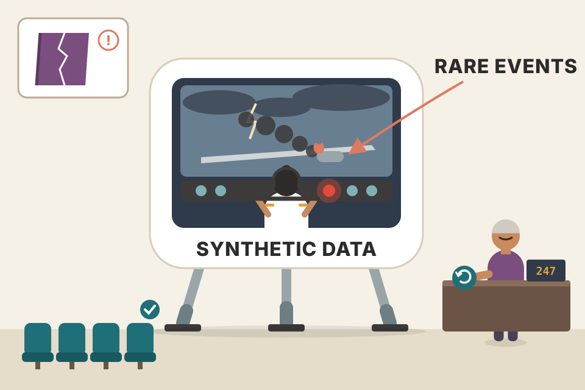
A flight simulator for pilot training: you can practise engine failures (rare events, coverage) hundreds of times (quantity), with exact repeatable scenarios (quality and consistency), without risking passengers (privacy and safety). Where it breaks: a simulator built from bad physics trains bad pilots; synthetic data inherits its generator's flaws.
Real data is a sample of what happened; synthetic data is a sample of what you specify. That control is the whole point: you can dial up rare classes, edge cases and formats, and remove sensitive fields, in a way that waiting for real data never allows.
"When would you use synthetic data?" "When real data is scarce or rare (fraud, outages), when I need targeted coverage like adversarial or long-context examples, when privacy blocks real data, when AI labels are more consistent than humans, like preference ratings, and for distillation. Always with a verification step and mixed with real data."
Data synthesis predates AI: it has a long history in software testing, gaming and robotics. Making data with algorithms is called procedural generation (as opposed to manual generation). Games use it to create levels, maps, items and characters on the fly. (Footnote 10: Minecraft and No Man's Sky use noise functions and fractal algorithms to build huge worlds; in Dungeons & Dragons it creates random dungeons, quests and encounters.) Most of these techniques carry over to AI.
The two traditional approaches are rule-based and simulation; the newer one is AI-powered synthesis. This plate is rule-based.
The simplest way: predefined rules and templates. To create a credit card transaction, start from a transaction template and fill each field with a random generator like Faker. The book's template has fields: transaction ID, date, time, amount, merchant name, merchant category, location, payment method, status and description. Because transaction data is sensitive, many fraud-detection models are first trained on synthetic transactions from templates like this to prove feasibility before getting access to real data.
My own Indian variant of the book's credit-card template. Each click fills the template with random values. Tick "inject fraud pattern" to oversample a rare class.
Templates are common for documents with a fixed structure: invoices, resumes, tax forms, bank statements, event agendas, product catalogues, contracts, configuration files. They can also produce data that follows a grammar, like regular expressions and math equations, for example equations for a model to solve. DeepMind trained AlphaGeometry, an Olympiad-level geometry model, on 100 million synthetic examples (Trinh et al., 2024).
Images: randomly rotate, crop, scale or erase part of an image. A flipped cat is still a cat; a slightly cropped football match is still a football match. Krizhevsky et al. (2012) showed how useful this is in the famous AlexNet paper, augmenting ImageNet (Deng et al., 2009).
Text: replace a word with a similar one, assuming meaning and sentiment stay the same. "She's a fantastic nurse" becomes "She's a great nurse".
This can also reduce bias. If "nurse" is associated with women and "doctor" with men in your data, swap gendered words with their opposites:
| Original data (Table 8-2) | Augmented data |
|---|---|
| She's a fantastic nurse. | He's a fantastic nurse. She's a fantastic doctor. |
| The CEO of the firm, Mr. Alex Wang, … | The CEO of the firm, Ms. Alexa Wang, … |
| Today, my mom made a casserole for dinner. | Today, my dad made a casserole for dinner. |
| Emily has always loved the violin. | Mohammed has always loved the violin. |
Similar words come from a synonym dictionary or from words whose embeddings are close in a word-embedding space. You can go further by asking AI to rephrase or translate an example (Plate 14).
A tiny swap dictionary (she/he, her/his, mother/father, mom/dad, Mr/Ms, …). Real pipelines also fix grammar and names, as Table 8-2's "Alexa" and "Mohammed" rows show.
Perturbation means adding noise to existing data to make new data. Researchers first found that slightly perturbing a sample can trick models: white noise on a ship photo can make a model call it a car. "One Pixel Attack for Fooling Deep Neural Networks" (Su et al., 2017) showed that changing one pixel misclassified 67.97% of natural images in the Kaggle CIFAR-10 test set and 16.04% of ImageNet test images. Exploited, this is dangerous: an attacker could get a model to mistake them for an authorised employee, or make a self-driving car mistake a divider for a lane.
Training on perturbed data can both improve performance and make the model more robust to attacks (Goodfellow et al., 2013; Moosavi-Dezfooli et al., 2015). In 2019, Hendrycks and Dietterich built ImageNet-C and ImageNet-P by applying 15 common visual corruptions (brightness changes, snow, contrast changes, noise) to ImageNet.
Text too: when training BERT, the authors replaced 1.5% of tokens with random words (Devlin et al., 2018), which gave a small performance boost.
BERT used 1.5%. Push it to 30% and the sentence stops meaning anything, which is why rates stay small.
Visual data can be augmented with fancier algorithms. Snap (2022) described augmenting their assets to create missing corner cases and reduce implicit bias: for a given character, they synthesise similar characters with different skin colours, body types, hairstyles, clothes and even facial expressions, and use them to train AI models.
A school's mock exam: the teacher keeps the same question template ("A train leaves station A at __ km/h…") and changes the numbers, producing 100 practice papers. That's rule-based synthesis. Where it breaks: students who only see templated questions struggle with a truly new question type; templated data has low diversity unless you keep adding templates.
Rules work when you know the invariances: a flipped cat is still a cat, a synonym keeps sentiment, a gender swap shouldn't change the label. Training on these variations tells the model "ignore this difference". Perturbation goes further: it shows the model the noisy inputs an attacker or the real world might produce, so its decision boundary becomes less fragile.
"How can you reduce gender bias in a classifier's training data?" "Counterfactual augmentation: duplicate examples with gendered words and names swapped, keep the same label, so the model learns the label doesn't depend on gender. Then test with paired inputs to confirm predictions don't change." For robustness, mention perturbation: one-pixel attacks fooled 67.97% of CIFAR-10 images, and BERT's 1.5% random token replacement is the text analogue.
Instead of collecting data in the real world, where experiments can be expensive and dangerous, simulate them. To test how a self-driving car reacts to a horse on the highway, you don't release a horse on a highway; you simulate it. Self-driving simulators: CARLA (Dosovitskiy et al., 2017), Waymo's SimulationCity and Tesla's simulation of San Francisco.
Robotics: say you want a robot to pour coffee but don't know how each joint should move. Simulate many scenarios with different joint movements and train only on the ones where the coffee was poured successfully.
Simulations let you run many experiments cheaply without accidents or damage. A robot that works in simulation might fail in reality, but one that fails in simulation will probably fail in reality. However sophisticated, simulations are simplifications of the real world; Sim2Real is the subfield about adapting algorithms trained in simulation to the real world.
Tool use: simulations are common here. Human actions are not always the most efficient for agents, and simulation can find actions humans overlook. Given a query, simulate different action sequences, execute them, check the outcomes, and use the most efficient successful sequence as the annotated response.
Query: "What's the refund status of my last order?" Each candidate plan is executed against mocked tools (modelled). Click "Run all" to keep the shortest plan that succeeds.
Rare events are where simulations shine. In finance, researchers simulate a company going public or a big bankruptcy to study market impact. Manufacturers simulate defects in materials or assemblies to train anomaly-detection and quality-control models. Climate scientists simulate Earth systems to create variations in temperature, rainfall and extreme weather, then feed this to AI models so they learn from a wider range of possible futures.
Rule-based and simulation methods helped many use cases, but data synthesis really took off only once AI could generate realistic, high-quality data.
NDRF teams rehearse building collapses in a mock site rather than waiting for a real earthquake. Where it breaks: a drill can't capture everything (panicked crowds, monsoon mud), the Sim2Real gap.
A simulator is a cheap, safe function from actions to outcomes. You can query it millions of times, keep only successful trajectories as labels, and over-sample rare events. The limit is fidelity: the model learns the simulator's physics, so anything the simulator gets wrong is learned as truth.
"How would you create training data for an agent that books appointments?" "Mock the calendar and CRM APIs, generate many user requests, let a strong model or a search over plans try different tool-call sequences in the sandbox, verify the final state (appointment created correctly), and keep the shortest successful trajectory as the label. That's the book's simulation approach applied to tool use."
Just as humans can produce data in endless ways, so can AI. The techniques here are not exhaustive, but give an overview.
AI can paraphrase to augment data. The query "How to reset my password?" becomes, for example: "I forgot my password.", "How can I change my password?", "Steps to reset passwords."
MetaMath (Yu et al., 2023) rewrote the 15,000 examples of MATH and GSM-8K in different ways to create almost 400,000 examples. Models trained on it beat larger models on related math benchmarks.
AI is often used to translate data from high-resource languages (lots of text online) into low-resource languages, to train models for languages like Quechua or Lao. Check translation quality with back-translation:
Example sentences and the overlap score are modelled for this page; Hindi stands in for a target language.
AI can also translate programming languages. Llama 3's authors translated their SFT code data into a wider range of programming languages. Llama 3's training depends heavily on synthetic data, with many creative tricks. One is back-translation for code explanations and documentation: start from code, have AI write explanations and docs, have AI write code back from those explanations, and keep the explanation only if the regenerated code is faithful to the original.
AI can generate data for both, but synthetic data is deliberately used far more in post-training. One explanation: pre-training aims to add knowledge, and while AI can re-express existing knowledge in new formats, it is hard to synthesise new knowledge. Still, as the internet fills with AI text, models pre-trained on web data are probably already eating synthetic data. Some synthetic pre-training datasets exist, like Cosmopedia (Allal et al., 2024): 25 billion tokens of synthetic textbooks, blog posts, stories, posts and WikiHow articles generated by Mixtral-8x7B-Instruct-v0.1 (Jiang et al., 2024).
Post-training synthesis is also more common because instruction and preference data take the most effort to make by hand. Using AI to pick the better of several responses is fairly simple (much of it is Chapter 3's AI judges). The main challenge is the judge's biases, like first-position bias (preferring whichever response comes first). NVIDIA's fix: ask the judge twice with the order swapped and keep a (prompt, winning, losing) triplet only if the same winner is picked both times (NVIDIA, 2024).
Six candidate pairs judged twice (A first, then B first). Modelled verdicts. Click "Filter" to keep only consistent pairs.
Back-translation is how a careful translator checks a Hindi legal notice: give the Hindi to a second translator who never saw the English, and compare their English to yours. If it comes back saying something different, the Hindi was wrong. Where it breaks: two translators can make the same mistake, so a clean round trip is strong evidence, not proof.
Generation is cheap, checking is the bottleneck. Round trips (text→translation→text, code→docs→code) turn an unverifiable output into one you can compare against a known original. Swapping response order turns a biased judge into a filter: only pairs where position didn't matter survive, which removes the bias's effect at the cost of fewer kept pairs.
"How do you generate preference data with an LLM judge without its biases leaking in?" "Judge each pair twice with the order swapped and keep only pairs where the same response wins both times, as NVIDIA did. Also randomise order, check length bias, and spot-check with humans." Also worth saying: synthetic data is used much more in post-training than pre-training, because AI can rephrase knowledge but not invent new knowledge.
Each instruction-finetuning example is an instruction plus a response. AI can write the instructions, the responses, or both. You can mix: AI writes instructions and humans write responses, or humans write instructions and AI responds.
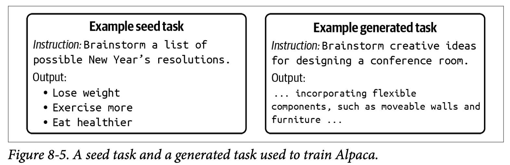
How to read this figure. Left: a human-written seed task, a brainstorming instruction (New Year's resolutions) with a short bullet-list answer. Right: a generated task the model produced after seeing seeds like it, same task type (brainstorm), new topic (conference room design), with a model-written answer. The seed fixes the style and type; the model varies the content. That is how 175 seeds became 52,000 examples.
30 topics and 30–50 subtopics are the book's UltraChat numbers; instructions per subtopic and cost are modelled.
Like humans, AI finds it harder to write long, high-quality responses than short instructions, and the longer the response, the more room to hallucinate. So flip it: use human-written responses with AI-written instructions. Researchers including Köksal et al. (2023), Li et al. (2023) and Chen et al. (2023) use the reverse instruction approach: take existing high-quality long-form content (stories, books, Wikipedia articles) and have AI write the prompt that would produce it. This yields higher-quality instruction data and avoids hallucinated responses.
Li et al. (2023) show you can use reverse instruction to build stronger and stronger models without new manual annotation:
Footnote 11: in theory this means a model could keep improving itself; whether that works in practice is another story.
If your model handles at most 8K tokens and you want 128K:
Chunk size fixed at 8K (the current context limit in the book's example).
The Llama 3 paper (Dubey et al., 2024) is detailed enough to be an excellent case study. Besides code translation and code back-translation (both expand existing code), the authors synthesised coding instruction data from scratch:
Then a strict correctness and error-correction pipeline:
Putting all three methods together, the full workflow:
With this pipeline, Dubey et al. generated over 2.7 million synthetic coding examples for Llama 3.1's supervised finetuning.
# sketch of the generate → check → repair loop (my own pseudocode, not Meta's code)
def make_example(problem, lang, llm):
code = llm.solve(problem, lang, rules=GOOD_PRACTICE, think_step_by_step=True)
tests = llm.write_unit_tests(problem, lang)
for attempt in range(MAX_FIXES):
report = lint(code, lang) + run_tests(code, tests) # parser/linter + execution
if report.ok:
return {"instruction": problem, "response": code} # only fully passing code is kept
code = llm.revise(problem, code, feedback=report) # self-correction with feedback
return None # give up: never enters the datasetKey idea in each line: generation and test-writing are both done by AI; the execution step is the ground truth that makes the data trustworthy; failures are repaired with the error messages as feedback; anything that never passes is thrown away.
Reverse instruction is like a quiz master who reads a great Wikipedia article and writes the question whose answer is that article, instead of asking a student to write the article. The answer is already trustworthy; only the question is generated. Where it breaks: the generated question may not match how real users ask, so coverage still needs checking.
Every technique in this plate puts the trusted part where errors are most costly. In reverse instruction, the long response is human-written. In Llama 3's pipeline, the code is AI-written but executed, so correctness is checked by a machine, not trusted. Seeds (Alpaca) and topic trees (UltraChat) control diversity, which pure "generate more" would lose.
You need SFT data for SQL generation over your schema. Generate 500 natural-language questions from a topic list (joins, aggregates, date filters…), have a model write SQL, execute each query on a staging database with seeded data, keep only queries that run and return the expected rows (checked against a hand-written answer key or a second model's independent query), and ask the model to repair failures using the DB error. Say 20% are fixed on retry (in line with Llama 3's footnote; the rest of these numbers are modelled): of 500, 350 pass first time, 80 pass after repair, 70 are dropped, leaving 430 verified examples.
"How would you synthesise SFT data for a coding or tool-calling model?" "Generate diverse problems from a topic list, generate solutions with CoT, then verify by execution: lint, AI-generated unit tests, and a repair loop with error feedback; keep only passing examples. Llama 3 used this to make 2.7M coding examples. For long responses, I'd prefer reverse instruction: human-written content with AI-written prompts, which avoids hallucinated answers."
Data quality drives model quality, so you need a way to verify data. AI-generated data can be judged like any other AI output: by functional correctness and by AI judges. This section is about synthetic data, but most techniques work for any training data.
Recall evaluation-driven development (Chapter 4): companies prefer to build apps they can evaluate. Likewise, people prefer to synthesise data they can verify. Coding is one of the most popular foundation-model use cases because it can be functionally evaluated, and for the same reason coding examples are among the most synthesised. Most of Llama 3's synthetic data is code, and all three of its methods produce data that can be verified programmatically, by code execution and back-translation.
For data that can't be checked by functional correctness, use AI verifiers: a general-purpose AI judge or a specialised scorer. Framings:
Like real data, synthetic data can be filtered with heuristics: remove empty or too-short examples; truncate or remove too-long ones; filter by keywords, user/author, creation date, metadata or source. The Self-Instruct authors (Wang et al., 2022) removed generated examples that were:
Ten generated examples written for this page. Length rule here: instruction under 3 or over 40 words.
Despite all these techniques, evaluating synthetic data remains hard. As with other AI apps, the ultimate test is real-world performance: does it improve the model? Synthetic data has passed that test for many models.
A sweet shop that makes laddoos by machine still has a quality checker: weigh each one (heuristics), taste a sample (AI judge), and for some batches send to a lab (functional check). Machines that can be checked easily get trusted with more of the work. Where it breaks: taste tests are subjective; AI judges have their own biases.
Verification converts cheap, untrusted generations into trusted training data. The more objective the check (tests pass, back-translation matches), the more you can generate safely. Where only subjective checks exist, you stack weaker filters (judge scores, topic filters, outlier detection, heuristics) and still validate by training and measuring.
"How do you know your synthetic data is any good?" "Prefer domains with functional checks (execute code, validate JSON schema, check tool-call results). Otherwise AI judges with clear rubrics, factual-consistency checks, topic and anomaly filters, plus heuristics like Self-Instruct's: drop repetitive, too long/short, conflicting, and echo examples. The final test is whether a model trained on it does better on a held-out eval."
It's tempting to dream of never needing human-annotated data again. But while synthetic data will keep growing in importance, it might never entirely replace human data. Four main reasons:
Worse, imitation can force the student to hallucinate. If the teacher can solve complex math, its answers are real solutions. Training a student on them teaches it to produce answers that look like solutions, even if it can't actually solve the problems. Gudibande et al. suggest that to improve reasoning, focus on improving the base model. (Footnote 13: humans can cause the same problem. If a labeler answers using knowledge the model doesn't have, they are effectively teaching the model to hallucinate.)
It is unclear how much AI-generated data a model can train on. In "The Curse of Recursion: Training on Generated Data Makes Models Forget", Shumailov et al. (2023) named model collapse and showed it in Variational Autoencoders, Gaussian mixture models and LLMs. It can happen in pre-training and post-training. (Footnote 14: the same authors later explained it in "AI Models Collapse When Trained on Recursively Generated Data", Nature, July 2024.)
One explanation: models tend to generate probable events (e.g., "no cancer") and rarely generate improbable ones (e.g., "cancer"). Over generations, common events become over-represented and rare events under-represented, so the model outputs common events more and forgets rare ones.
Modelled. A distribution of 12 event types, common on the left, rare on the right (purple = the rarest third). Each generation, the model samples from what it learned but slightly favours probable events (sharpening), then the next model trains on that. Mix in real data to see the effect Gerstgrasser et al. describe.
More subtle: models are shaped by their training data and can regurgitate it without the user knowing. If you use model X to generate training data and X was trained on copyright-violating data, your model may violate copyright too. Or: you evaluate on benchmark B and look great, but if X was trained on B, your result is contaminated. Without clear lineage it's hard to judge commercial viability or trust performance.
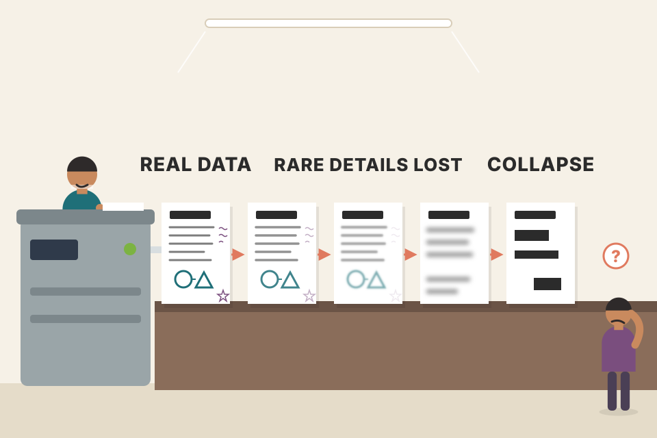
Model collapse is photocopying a photocopy of a photocopy: each copy loses faint details first, the light pencil notes in the margin (rare events), until only the bold headings (common events) are left. Where it breaks: photocopies degrade randomly; models degrade in a specific direction, toward the most probable outputs.
A generative model is an approximation of a distribution. Sampling from it under-samples the tails (plus decoding tricks like low temperature sharpen it further). Train on those samples and the next model's tails are thinner still. Real data acts as an anchor that keeps re-injecting the true tails, which is why mixing helps. Imitation fails for a different reason: the student learns the surface of the teacher's outputs, not the capability that produced them.
"What's model collapse and how do you avoid it?" "Training recursively on model-generated data makes rare events disappear, because models over-produce probable outputs; Shumailov et al. showed it in VAEs, GMMs and LLMs. Mitigation: keep real data in the mix (Gerstgrasser et al.), verify synthetic data, track lineage so you know what came from which model, and watch for contamination on benchmarks the teacher may have seen." In a RAG memory system, the same risk appears if you summarise summaries of past conversations: details vanish each round.
A special case where AI-generated data isn't just helpful but required. Model distillation (also knowledge distillation) trains a small model (the student) to mimic a larger one (the teacher) (Hinton et al., 2015). The big model's knowledge is "distilled" into the small one.
Traditionally the goal is smaller models for deployment, since big models are resource-hungry. Example: DistilBERT (Sanh et al., 2019), distilled from BERT, is 40% smaller, keeps 97% of BERT's language-understanding ability, and is 60% faster.
The student can be trained from scratch (like DistilBERT) or finetuned from a pre-trained model (like Alpaca). In 2023, Taori et al. finetuned Llama-7B on examples generated by text-davinci-003 (175B parameters). The result, Alpaca, behaves similarly to text-davinci-003 at 4% of its size.
Not every model can be distilled: many model licenses prohibit using their outputs to train other models, especially competing ones. Check the terms of the teacher.
Synthetic instruction data is often paired with adapter methods like LoRA. BuzzFeed finetuned a Flan-T5 model with LoRA on examples from OpenAI's text-davinci-003, cutting inference cost by 80%, though it was unclear how well the model performed (2023).
Distillation implies the teacher's performance is the student's gold standard. But synthetic data can train a student that ends up larger and stronger than the teacher.
A senior chef's apprentice copies his dishes until a small cloud-kitchen can serve almost the same menu at a fraction of the cost (distillation). Sometimes an apprentice with a bigger kitchen and years of his own practice ends up better than the chef who taught him the recipes (Nemotron-4). Where it breaks: recipes may be the chef's trade secret; model licenses can forbid copying too.
The teacher's outputs are a cleaner, more consistent training signal than raw human data for the specific behaviour you want, so a small student can reach much of the teacher's quality on that narrow distribution. A strong pre-trained student (340B Nemotron) already has its own knowledge; the teacher's data mainly teaches it the instruction-following format and style, so it can surpass the teacher. Unverified self-training adds no new information, which is why Llama 3 needed verification to gain from it.
Your voice agent calls a large API model for intent classification at about 500 ms and a meaningful cost per call (modelled). You log 50,000 calls with the big model's labels, verify a sample by hand, and LoRA-finetune a small open model on them. If it matches the teacher on 97% of a held-out set, like DistilBERT kept 97%, and runs locally in about 40 ms, you've cut latency and cost on the hot path. First check the teacher's license allows this.
"How would you cut LLM cost on a high-volume narrow task?" "Distil: generate labels or responses with a strong teacher, verify them, finetune a small student (often with LoRA), and evaluate against the teacher on held-out data. BuzzFeed cut inference cost 80% that way. Check the teacher's license first. And note training on synthetic data isn't always distillation: Nemotron-4 340B beat its smaller Mixtral teacher."
Data must be processed according to each use case's needs. The next plates are reference steps: inspect → deduplicate → clean and filter → format. The author finds it useful to read model papers that disclose their dataset details; they are full of tips on how researchers curated, generated and processed data.
With a lot of data, each step can take hours or days. Efficiency tips:
Modelled costs. Each step's time is per example; dedup removes some share of data, the quality filter removes another share. The page tries both orders and picks the cheaper.
Sorting a wedding's RSVP list: first remove duplicate entries (fast), then call each remaining guest to confirm (slow). Doing calls first wastes time on duplicates. And you never overwrite the original guest list; you work on a copy. Where it breaks: sometimes cleaning reveals duplicates (two spellings of one name), so the order may need a second dedup pass.
Steps that remove data shrink the work for every later step, so cheap, high-removal steps belong early. Immutability is the same idea as an append-only log in backend systems: raw data is the source of truth; every processed version is a derived, reproducible artefact.
"Design a data processing pipeline for finetuning." "Raw data is immutable in object storage with versioning; each stage (inspect, dedup, clean/filter, format) writes a new versioned dataset; stages are ordered by cost and how much they remove; every script is trial-run on a sample first." This is the same discipline as database migrations: dry run, then apply, never destroy the source.
After gathering a raw dataset from public and internal sources, first inspect it to get a feel for its quality. Get its information and statistics: Where does it come from? How was it processed? What else has it been used for?
Plot distributions of tokens (which are common), input lengths, response lengths, etc. Does it use special tokens? What are the distributions of topics and languages, and how relevant are they to your task?
Be creative with statistics. Microsoft researchers (2023, "Instruction Tuning with GPT-4", Peng et al.) compared GPT-3's and GPT-4's outputs for the same instructions using the distribution of (verb, direct-object noun) pairs and response length. This kind of analysis evaluates models as well as data.
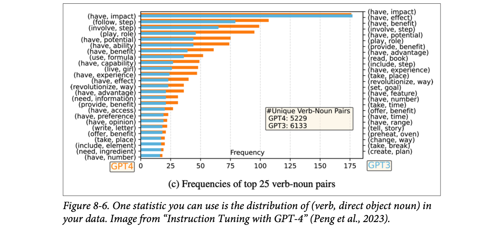
How to read this figure. It overlays two rankings. Orange bars with labels on the left are GPT-4's top 25 verb-noun pairs; blue bars with labels on the right are GPT-3's top 25 (the two label columns are different lists). x-axis: frequency. Both are led by (have, impact) at about 175. GPT-4's orange bars stay higher further down the list (e.g., follow step, involve step, play role), while GPT-3 drops off faster. The box shows the count of unique verb-noun pairs: GPT-4 5,229, GPT-3 6,133. Note: the book's text says GPT-4 has the broader, more diverse range, while this legend shows GPT-3 with more unique pairs; the "broader range" reading comes from GPT-4's flatter frequency curve across the top pairs. Worth keeping in mind that one statistic can be read two ways.
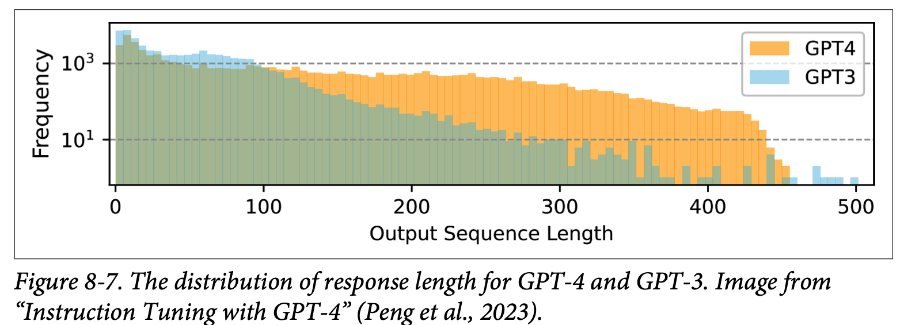
How to read this figure. x-axis: output length (0–500); y-axis: how many responses have that length, on a log scale (101, 103), so each gridline is 100× more. Blue (GPT-3) is high on the left and falls off quickly after ~100. Orange (GPT-4) stays high much longer, out to ~400–450. So GPT-4 writes longer responses. Because of the log scale, a gap that looks small is actually a large ratio.
The book's summary of both: GPT-4 seems to have a broader, more diverse range of verb-noun pairs and generates longer responses.
Modelled scores (1–5) from three annotators on the same 10 essays. Click an annotator to see their distribution against the group.
Use data-exploration tools, but they don't replace manual inspection. In every project the author has worked on, staring at the data for just 15 minutes gave insights that saved hours of headaches. OpenAI cofounder Greg Brockman tweeted that manual data inspection has probably the highest "value-to-prestige ratio" of any activity in ML.
A new kitchen manager tastes every dish on day one before changing the menu. Sales reports (tools) are useful, but the taste test catches the cook who adds too much salt. Where it breaks: you can taste every dish; with millions of examples you can only sample, so sample smartly (by source, annotator, outliers).
Aggregate statistics hide the specific failure modes, like a template leaking into responses or one annotator copying the prompt. Slicing by source/annotator exposes systematic issues; reading samples exposes the ones no statistic was designed to catch.
"You've been handed a new dataset. What's your first hour?" "Provenance and license; basic stats (counts, length distributions, languages, topics, special tokens); slice by source and annotator to find skew and outliers; measure inter-annotator disagreement; then 15 minutes reading random samples and re-labelling a few myself to see whether I agree."
Duplicates can skew the data distribution and introduce bias. In the toy dataset below, the duplicated rows might lead a model to the wrong conclusion that all red items are expensive. Duplicates can also cause test set contamination: when you split into train and test, one copy lands in train and its duplicate in test.
The table rows are the book's; the "average price by colour" model is my illustration of how duplicates bias what a model learns.
Several studies show duplicated training data hurts: Lee et al. (2021) and Tirumala et al. (2023). An Anthropic study (Hernandez et al., 2022) showed that repeating 0.1% of the data 100 times can drop an 800M-parameter model's performance to that of a 400M model, even though the other 90% of training tokens stayed unique. Even when duplicates don't hurt, they waste time and compute.
What counts as a duplicate is your definition. Document, paragraph, sentence or token level? Exact match, or is 80% overlap enough? Are two lists with the same items in a different order duplicates?
Dedup uses the same techniques as similarity measurement (Chapter 3). It is also used for identity resolution: deciding whether two identities (e.g., two social media profiles) are the same. Concrete approaches:
Libraries: dupeGuru, Dedupe, datasketch, TextDistance, TheFuzz, deduplicate-text-datasets. (Footnote 16: the author's open-source library lazyNLP also supports overlap estimation and dedup with a Bloom filter.)
Jaccard similarity of word 3-gram sets, computed live. MinHash estimates exactly this Jaccard score cheaply, so you never compare every pair.
# MinHash + LSH near-duplicate search with datasketch (illustrative; check the library docs)
from datasketch import MinHash, MinHashLSH
lsh = MinHashLSH(threshold=0.8, num_perm=128) # "80% overlap counts as duplicate"
def signature(text):
m = MinHash(num_perm=128)
for gram in word_ngrams(text, 3): # your own helper: 3-word shingles
m.update(gram.encode("utf8"))
return m
for doc_id, text in corpus:
sig = signature(text)
if lsh.query(sig): # only candidates in the same hash buckets
drop(doc_id) # a near-duplicate already exists
else:
lsh.insert(doc_id, sig)Why it scales: each document becomes a short signature; LSH (locality-sensitive hashing) buckets similar signatures together, so each lookup checks a handful of candidates instead of the whole corpus. The threshold is where you encode "is 80% overlap a duplicate?".
A voter list with the same person entered three times with slightly different spellings ("Ramesh Kumar", "Ramesh Kumar ", "R. Kumar"). Exact match finds one pair; fuzzy match finds all three. Leave them and that person "votes" three times, which is what duplicates do to a model's training signal. Where it breaks: two different people can share a name; too low a threshold removes legitimate examples.
Each copy of an example adds another gradient step toward it, so duplicates act like a hidden weight that tilts the model toward whatever is repeated, and encourages memorisation over generalisation. In a train/test split, a duplicate in both sets makes the test measure memory instead of skill, so scores look better than reality.
"Dedupe 100 million documents." "Exact dupes first with a content hash (cheap). Then near-dupes with MinHash signatures over n-gram shingles plus LSH buckets, so it's roughly linear instead of n². Choose the level (doc vs paragraph) and threshold per use case. Dedup before the train/test split to avoid contamination." Backend tie-in: it's the same idea as idempotency keys and Bloom filters you'd use for request dedup.
Cleaning has two goals at once: a model that performs well and a model that is safe. The book lists the cleaning jobs roughly in this order.
Lots of public datasets are scraped from the internet, so stray HTML tags are everywhere. Unless you actually want a model that writes HTML tags, take them out. A real number: Databricks found that stripping extraneous Markdown and HTML tokens raised their model's accuracy by 20% while cutting input token length by 60%. Better and cheaper at the same time.
Clean out data that isn't compliant with your policies: PII (personally identifiable information), other sensitive data, copyrighted data, and toxic data. The detection techniques are the ones from Chapter 4 (PII detectors, toxicity classifiers and so on). Also drop every field you are not allowed to use; the book's examples are zip code, name and gender. (A model can learn a biased shortcut from a field like gender even if no one meant it to.)
Use the techniques from Data verification (plate 16: functional correctness, AI judges, heuristics, anomaly detection) to find and drop low-quality examples. Manual inspection matters most here: staring at the data shows you patterns you can turn into heuristics (cheap rules) for spotting bad examples.
Good heuristics can be non-obvious. Kern et al. (2024) found that annotations made in the second half of an annotation session are lower quality, probably because annotators get bored or tired. So "time into the session" becomes a quality signal you would never have guessed from the text alone.
Sometimes you have more data than you need or can afford to train on (for example, because of your compute budget). Then you filter on purpose:
Both only work as well as your way of scoring how important each training example is. Meta researchers in their data-pruning paper (Sorscher et al., 2022) concluded that finding good data-pruning metrics could significantly cut the resource cost of modern deep learning: the right metric lets you train on less data for the same result.
Modelled data. Token counts are a rough "words and symbols" count, not a real tokenizer. The "late in session" rule mimics the Kern et al. (2024) finding.
# illustrative cleaning pass (your own helpers, not a specific library)
import re
FORBIDDEN = {"zip_code", "name", "gender"} # fields policy says you may not use
def clean(example):
ex = {k: v for k, v in example.items() if k not in FORBIDDEN} # drop forbidden fields
ex["text"] = re.sub(r"<[^>]+>", " ", ex["text"]) # strip HTML tags
ex["text"] = mask_pii(ex["text"]) # e.g. a PII detector from Ch.4
return ex
def keep(example):
if is_toxic(example["text"]): return False # policy filter
if example["minutes_into_session"] > 30: return False # a heuristic you found by inspection
return quality_score(example) >= 0.7 # verifier / AI judge from plate 16
dataset = [clean(e) for e in raw if keep(e)]What each part does: FORBIDDEN encodes your policy; clean changes an example (formatting, PII, fields); keep decides whether the example survives (toxicity, heuristics, a quality score). The 30-minute cutoff and 0.7 threshold are made-up placeholders you would tune by looking at your own data.
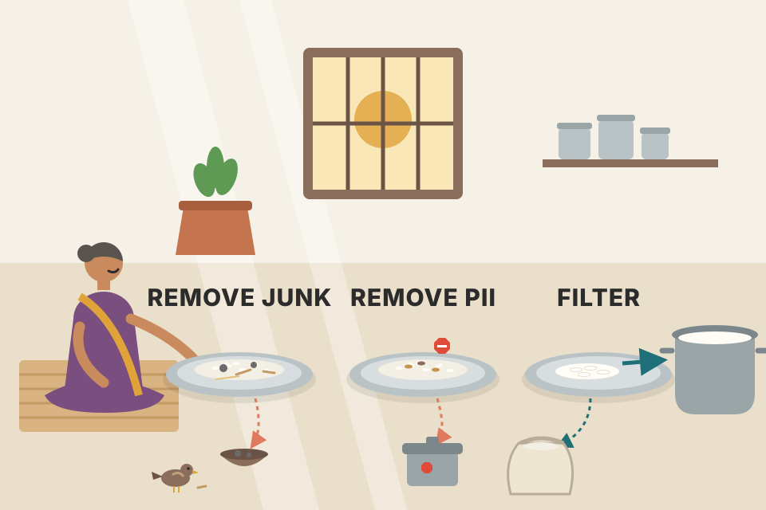
Sorting rice before cooking: first you pick out the stones and husk (HTML junk), then you throw out anything you are not allowed to serve (PII, copyrighted text), then you keep only the best grains if you have more than the pot can hold (filtering). Where it breaks: a bad grain is visible; a bad training example often looks fine until you check it against something (a verifier, a heuristic, your own eyes).
Every token in the training data costs compute and pulls the model toward imitating it. HTML junk wastes tokens and teaches formatting noise; PII and forbidden fields can be memorised and leaked or used as biased shortcuts; low-quality examples teach wrong behaviour. Filtering by importance works because not all examples carry equal learning signal, so a good scoring metric lets you spend compute only where it teaches something.
"Your scraped finetuning set is 10x bigger than your GPU budget. What do you do?" "First clean: strip HTML/Markdown (Databricks saw +20% accuracy and 60% fewer input tokens), remove PII, toxic, copyrighted data and forbidden fields. Then drop low-quality data with verifiers and heuristics found by reading samples. Then filter to budget with active learning or importance sampling, which depends on having a good per-example importance score; data-pruning research says a good metric can cut cost a lot." In a voice-agent product, the same applies to transcripts: mask phone numbers and names before they go anywhere near training.
After dedup and cleaning, the data must be converted into the format the model you are finetuning expects. Each model has its own tokenizer and expects its own chat template (Chapter 5). Put data in the wrong chat template and you can get strange bugs in the trained model.
For supervised finetuning, data is most likely (instruction, response) pairs, and an instruction can be split further into (system prompt, user prompt).
If you moved to finetuning from prompt engineering, your finetuning instructions can be different from the prompts you used before. During finetuning, instructions usually don't need a task description or examples: with enough training examples, the model learns the expected behaviour directly from the examples.
The book's example: a food classification task using a three-shot prompt on a base model. The prompt says to label an item as edible or inedible, shows three solved examples (burger → edible, car → inedible, mushroom → edible), then leaves a slot for the new item. For finetuning, the three examples inside the prompt simply become training rows, as in Table 8-4. Step through it:
Rows 1–3 are the book's Table 8-4; the token counts in step 5 are my rough count (modelled), only to show the size gap.
| Example ID | Input | Output |
|---|---|---|
| 1 | burger --> | edible |
| 2 | car --> | inedible |
| 3 | mushroom --> | edible |
| … | … | … |
Once finetuned, the prompt can be as small as {INPUT} -->. That is far shorter than the three-shot prompt, so if input-token cost of your instructions worries you, finetuning is one way to manage it (you pay once in training instead of on every request).
Two more rules from this section:
burger -->, then each of these can cause problems: burger (missing the arrow), Item: burger --> (extra prefix), burger --> (extra trailing space).Training format: <item> --> (one item, a space, the arrow, nothing after). The trailing space matters because tokenizers usually turn a space into part of a token, so the model sees a token sequence it never saw in training.
# turning (instruction, response) pairs into a model's chat template (Hugging Face style; illustrative)
from transformers import AutoTokenizer
tok = AutoTokenizer.from_pretrained(BASE_MODEL) # the SAME model you will finetune
def to_text(item, label):
messages = [{"role": "user", "content": f"{item} -->"},
{"role": "assistant", "content": label}]
return tok.apply_chat_template(messages, tokenize=False) # inserts that model's special tokens
train_texts = [to_text(i, l) for i, l in rows]Why use the tokenizer's own template: each model family wraps roles in different special tokens. Hand-writing them is how "wrong chat template" bugs happen. At inference you call the same function without the assistant turn, so training and serving prompts are byte-identical.
A railway reservation form: the clerk is trained on the official form layout. Hand him the same details on a plain sheet with an extra "Dear Sir" at the top and he slows down or makes mistakes. Finetuning is training the clerk on one exact form; inference must use that same form. Where it breaks: a human clerk adapts to a slightly different form; a model can fail silently on a single extra space.
A finetuned model learns a mapping from very specific token sequences to outputs. The task description and examples in a few-shot prompt were there to tell a base model what to do; after finetuning, that knowledge lives in the weights, so the prompt can shrink to a trigger pattern like -->. Because the trigger is a learned token pattern, any change in tokens (a missing arrow, an extra prefix, a trailing space, the wrong chat template's special tokens) puts the input outside what the model was trained on.
"Your finetuned model works in the notebook but gives odd outputs in production." "First thing I'd check is format drift: is production applying the same chat template and the same prompt shape as training? A missing separator, an extra prefix or a trailing space changes the tokens. I'd share one formatting function between the training pipeline and the serving code." Also: "Finetuning lets you drop few-shot examples from the prompt, which cuts input tokens on every call", a real lever in a high-volume LLM gateway or a latency-sensitive voice agent.
The book's closing summary, in plain words:
| Term | Plain meaning |
|---|---|
| Dataset engineering | Building the dataset that lets you train the best model within your budget. |
| Data-centric AI | Improving AI by improving data (vs model-centric AI: improving the model on fixed data). |
| Data curation | Deciding what data you need, how much, and what "good" means. |
| Quality / coverage / quantity | The three criteria: is each example good, does the set span the problems users bring, is there enough of it. |
| Data coverage (diversity) | How well the data covers the range of tasks, topics, formats and lengths your users actually produce. |
| Data flywheel | Using your own app's user data to improve the model, which brings more users and more data. |
| Annotation guideline | The written rules that tell annotators what a good label or response looks like; often the hardest part. |
| Data augmentation | Making new data from real data (flip an image, swap a word). |
| Data synthesis | Generating data that mimics real data without starting from a specific real example. |
| Rule-based / template synthesis | Filling templates or applying transformations with code. |
| Simulation | Generating data by running a virtual world (self-driving sims, self-play, API simulators). |
| Back-translation | Translate to another language (or code form) and back, keeping only examples that survive the round trip. |
| Reverse instruction | Take high-quality human content and have AI write the instruction that would produce it. |
| Self-Instruct / Alpaca | Synthesising instruction data from a small seed set with a strong model. |
| Data verification | Checking data quality by functional correctness, AI judges, heuristics or anomaly detection. |
| Superficial imitation | A student model copies a teacher's style without its abilities, and may hallucinate more. |
| Model collapse | Models trained recursively on generated data forget rare events and drift toward common ones. |
| Data lineage | Knowing where data came from; obscured when AI-generated data hides its sources. |
| Model (knowledge) distillation | Training a small student model to mimic a larger teacher. |
| Deduplication | Removing exact and near-duplicate examples (pairwise comparison, hashing like MinHash/Bloom filter, dimensionality reduction). |
| Test set contamination | A duplicate of a test example sits in the training set, so the test measures memory. |
| PII | Personally identifiable information; must be removed or masked. |
| Active learning | Selecting the examples most helpful for the model to learn from. |
| Importance sampling | Selecting the examples most important for your task. |
| Data pruning | Dropping training examples using a metric so you train on less data for the same result. |
| Chat template | The model-specific way roles and turns are wrapped in special tokens; data must use it exactly. |
| Name | What it does with the idea |
|---|---|
| OpenAI (GPT-3, GPT-4, ChatML) | Data work grew from 2 credited people (GPT-3) to about 80 (GPT-4); 11 people on the ChatML message format. OpenAI's game-playing bot learned by self-play in a simulator (OpenAI, 2019). |
| Meta Llama 3 | Large synthetic-data pipeline, mostly code, verified by code execution and back-translation; multi-message tool-use data. |
| Stanford Alpaca / Self-Instruct | 175 human seed tasks expanded into tens of thousands of instruction pairs with a strong model; heuristics to filter them. |
| NVIDIA Nemotron | Synthetic data pipeline with AI judges and a swap-order trick for preference pairs. |
| Cosmopedia (Allal et al., 2024) | Synthetic pre-training corpus of textbooks, stories and articles generated by Mixtral-8x7B-Instruct. |
| Anthropic | Model-written evaluations (Perez et al.); the duplication study showing 0.1% repeated 100 times can shrink an 800M model to 400M-level performance. |
| DeepMind AlphaGo / AlphaGeometry | Self-play over millions of games; 100 million synthetic geometry problems. |
| CARLA, Waymo SimulationCity | Self-driving simulators: generate rare, dangerous scenarios safely. |
| StableToolBench | Uses AI to simulate APIs so tool-use data can be generated without calling real services. |
| DistilBERT | Distilled from BERT: a smaller student that keeps most of the teacher's ability. |
| Databricks | Removing extraneous Markdown/HTML gave +20% accuracy and 60% shorter inputs. |
| dupeGuru, Dedupe, datasketch, TextDistance, TheFuzz, deduplicate-text-datasets, lazyNLP | Deduplication libraries: exact, fuzzy, MinHash/LSH, suffix-array and Bloom-filter dedup. |
| DataComp, DataPerf, dcbench | Data-centric competitions/benchmarks: fix the model, compete on the dataset. |
| Hugging Face datasets, Kaggle, Google Dataset Search and other public sources (plate 9) | Places to find public datasets before building your own. |
| Snap | Augmented visual assets to create missing corner cases and reduce implicit bias (Snap, 2022). |
In practice you meet these ideas as: Hugging Face datasets + tokenizer.apply_chat_template for formatting, Presidio-style PII detectors in cleaning, MinHash/LSH dedup inside large pre-training pipelines (e.g. the FineWeb and RedPajama recipes), and LLM-as-judge filters in synthetic-data tools. Library names here are context, not claims from the chapter.
Quality, coverage (diversity) and quantity. Quantity gets the headlines, but the chapter stresses that quality and coverage matter just as much: a little high-quality data can beat a lot of noisy data.
Pre-training learns from raw text, so volume of text (tokens) is the natural unit. SFT learns behaviours from individual (instruction, response) demonstrations, so the number of examples is what matters.
Not blindly. The book suggests trying a small set (around 50) first: if it helps, more data likely helps more; if it shows nothing, check the data, hyperparameters and setup first. Then train on subsets (e.g. 25%, 50%, 100%) and plot the gain curve to estimate the value of more data.
It matches your real task and real user distribution, and it feeds the data flywheel: better model → more users → more relevant data.
Writing the annotation guidelines: defining exactly what a good response looks like, including edge cases, so different annotators label consistently.
Any of: increase quantity, increase coverage (rare classes, adversarial cases, edge cases), increase quality (e.g. AI writes preference or tool-use data better than humans), mitigate privacy concerns, and distill models.
Start from high-quality human-written content (long responses, articles) and have AI write the instruction that would produce it. The response is human quality, so you avoid AI hallucinations in the long answer while still synthesising pairs cheaply.
Code can be verified programmatically (run it, test it, back-translate it). People synthesise the data they can verify, which is why coding is both a top use case and the most synthesised data type (as in Llama 3).
Model collapse: rare events vanish first, outputs drift toward the most probable ones, and performance degrades over generations. Mixing in real data avoids or slows it.
If an example and its duplicate land in train and test respectively, the test measures memorisation (test set contamination). Duplicates also skew the distribution, as in the "all red items are expensive" toy table.
Hashing: MinHash signatures (with LSH buckets) or a Bloom filter so you only compare within a bucket; or reduce dimensions first and use vector-search techniques. Pairwise comparison works but is n² and expensive at scale.
Kern et al. (2024): annotations made in the second half of an annotation session are lower quality, likely from boredom or fatigue.
The prompt has an extra prefix and a trailing space, so its tokens differ from training and outputs can break. Use the exact training format (and the model's own chat template) through one shared formatting function in both training and serving.
After finetuning, the task description and few-shot examples are no longer needed in the prompt; a 3-shot prompt can shrink to "{INPUT} -->", cutting input tokens on every request.
The book cites these inline (no separate reference list at the chapter end). Author and year as in the book, with what each is cited for on this page.